State of Text Rendering 2024
behdad.org/text2024
behdad
8 July 2024
[Leave comments: Google Docs, Hacker News, LWN, typo.social, X, reddit, phoronix]
License
This text is available under the Creative Commons Attribution-ShareAlike License 4.0.
TL;DR
In this survey paper, I cover advances in the OpenType standard and the Open Source text stack and applications since 2009. I also discuss the future advances currently underway.
In broad strokes, OpenType added support for color fonts, variable fonts, and the Universal Shaping Engine. The Free & Open Source stack supports all of these advances at the lower level, but application UI support has been slower to arrive. The Open Source text stack also gained enormous market-share when Android and Google Chrome fully embraced it. Adobe now integrates parts of the Open Source stack for OpenType shaping in their flagship applications Photoshop, Illustrator and InDesign.
Looking forward, there is a Rust migration of the text stack underway, which will unify font compilation and consumption under a safe programming language. Incremental Font Transfer will stream fonts to web browsers. And my proposed Wasm-fonts will finally enable correct rendering of the most complex writing systems that are not (and inherently can not be!) fully supported by the OpenType Shaping model, and more expressive fonts for simple writing systems like Latin.
Table of contents
Preface
In 2009 I wrote State of Text Rendering, as a high-level review of the Free Software text rendering stack, with a focus on shaping, and mostly in the context of the GNOME Desktop. Since then, I have spent around twelve years working on various Google products to improve fonts and text rendering: all Open Source work.
When I wrote that text in 2009, my main assignment was to finish HarfBuzz. Around 2012 HarfBuzz became fairly complete, and my attention was shifted elsewhere. I was the tech-lead of the Fonts & Text Rendering team at Google Internationalization Engineering, which was then responsible for initiating and commissioning the Noto Fonts from Monotype and Adobe. I realized that at Google we control every aspect of displaying text, from design of the fonts to rendering them on billions of devices, except for the font format itself. And with the emergence of emoji as Unicode text and a desire to render them using text APIs, in 2013 I extended the font format to support color. It was an eye-opening experience: to be not blocked by the font-format limitations. Font-format extensions became a core part of my interest and responsibilities since.
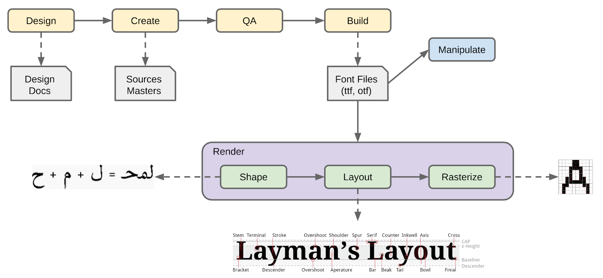
End-to-end text rendering. laymanslayout.wordpress.com
Another big change in my career in this period was crossing the fence into the type design side of fonts and, with others, building a font compiler called fontmake. As such, I include font design and compilation in this paper as well.
In this overdue update, I survey advances in the OpenType standard and the Open Source text stack and applications. I also discuss what the future might hold in this realm.
In true release-early & release-often tradition, I am publishing this paper without having finished my research on all the applications and projects involved. I have left many TODO items, and have left out many topics and projects that did not even occur to me to include. Your comments and input are welcome. You can comment on the Google Docs version, or contact me via email. My contact info is on my homepage. I plan to update this at least till the end of 2024, and then publish a dated article that can stand as a historical artifact similar to the 2009 article.
Fifteen years is a long time to write an update, and as a result this text is quite long, so I apologize for that. The text is written roughly in a way that different sections can be read independently, given the prerequisites are met. To this end, there is some redundancy in the text, which I hope will not bore you to stopping reading.
Dedication
Dedicated to the memories of Emil ‘eae’ Eklund and Saber Rastikerdar.
With Emil I spent weeks improving Chrome text layout over the years.
Saber made beautiful Open Source Persian fonts; a dream of mine.
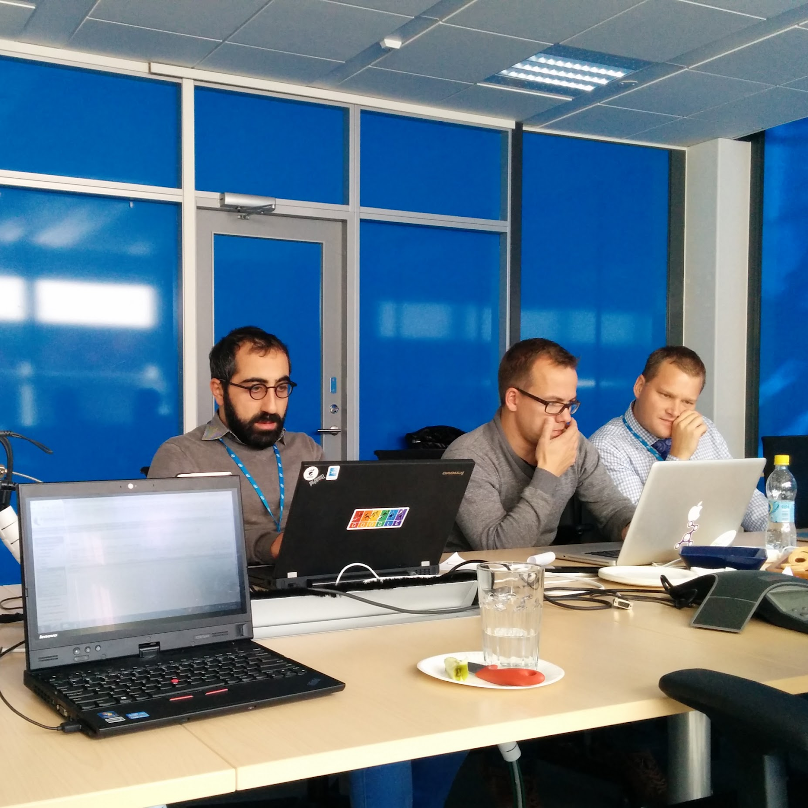
With Dominik Röttsches, and Emil ‘eae’ Eklund. Chrome hackathon. Intel office. Espoo, Finland. 2014.
Saber Rastikerdar. 1986–2023.
Prerequisites
I assume a high-level understanding of how text rendering works, for example, what shaping is. If that does not sound familiar to you, you might want to review State of Text Rendering (2009), Modern text rendering with Linux: Overview (2019), and the slightly higher-level Text layout is a loose hierarchy of segmentation (2020).
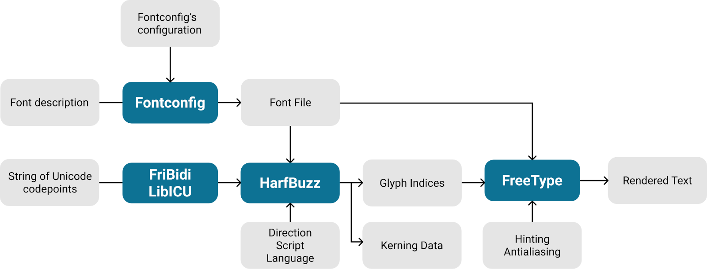
The data flow of text rendering. Modern text rendering with Linux: Overview.
Introduction
Computer fonts have a pedigree of over fifty years. Many font formats and paradigms have come and gone. The so-called Font Wars of the 1990s resulted in the introduction and dominance of OpenType fonts as the lingua franca of digital text, both for type design and consumption.
The 3 major implementations of OpenType in 2024 are:
DirectWrite, the successor to Uniscribe, is Microsoft’s native implementation. Although it is not used in Microsoft Edge (more on that in the next chapter),
CoreText, the successor to ATSUI, is Apple’s native implementation,
FreeType + HarfBuzz, constitute the Open Source implementation.
Apple also has their own original line of TrueType, which evolved into being called Apple Advanced Typography (AAT), as an alternative to OpenType. Since the 2010s Apple has also embraced OpenType for their new font families, yet many important families still remain as AAT fonts on Apple’s platforms, and as such supporting AAT in the Open Source stack is essential for a smooth experience on such platforms.
Adobe also had their own original line of OpenType implementations, but as far as we know, they have stopped maintaining them and in the process of replacing them all with the Open Source stack.
Monotype has their own line of OpenType implementations too, and as far as we know, they still maintain them—especially for specialist domains like embedded devices (including printers). They also sell support for the Open Source stack to their customers (since those customers often adopt Open Source stuff lying around to get started and then later develop needs that they want to hire a vendor to fulfill).
In this paper I survey the Open Source fonts and text production and rendering landscape advancements over the last fifteen years, and shed light on what is underway.
Looking back
In this chapter I will survey the advances made in the last fifteen years in the landscape.
OpenType
OpenType saw quite some activity between 2014 and 2016, but then became dormant, with the editor (Peter Constable) being assigned to other projects, then leaving Microsoft, and joining back later as editor again. There has been recent activity on the color fonts side, and new proposals, which I cover in the next chapter.
FontTools, FreeType, and HarfBuzz all support the new features. More on those below.
Color fonts
Color fonts turned out to be a disaster:
By 2012 already Apple shipped their sbix format for their emoji font, without any standardization. This was later contributed to OpenType in 2016,
In 2013 at Google I made our own, Open Source, format called CBDT/CBLC based on the existing architecture of OpenType monochrome bitmaps, for Android emoji use,
A couple months later, Microsoft released their COLR solution, which was a solid-colored set of layers rendered on top of each other, which matched their Metro design language of the time. This is now called COLRv0, as it was extended later in COLRv1 (more on that below),
Lastly, Adobe and Mozilla were working on a SVG solution which was released soon after.
Of these, sbix and CBDT/CBLC were based on PNG bitmaps; COLR supported vector outlines but only solid colors, and SVG supported arbitrary vector graphics, but depended on an external specification generally understood as overly-complicated. Later in 2016, COLR needed no updates to work along with Variable fonts (see below), and so was the only color format that supports variation, and likewise the only variation format that supports color. So, no one solution covered all the use-cases. It took quite a few years for the different formats to make their way into browsers and other applications. The aptly-named colorfonts.wtf website summarizes support across browsers and applications.
Markedly, Chrome and Android made a policy decision to never ship the SVG solution for architectural reasons, which limited that format’s reach. But Google desired a vector format with color gradients. In 2019, together with Dominik Röttsches of Chrome and Roderick Sheeter (Rod) of Google Fonts, we developed a proposal for COLRv1. It took a few years, but in collaboration with Microsoft, it was finally added to OpenType around 2022, and shipped in Chrome and Android among other systems soon after – but remains unsupported in Safari, Adobe flagship applications, Figma, etc. Like its predecessor COLRv0, the new COLRv1 also supports font variations natively.
The Google Fonts team has developed a color-font compiler, nanoemoji, that can build fonts in a variety of formats. The tool is used to build Google’s and Microsoft’s color emoji fonts.
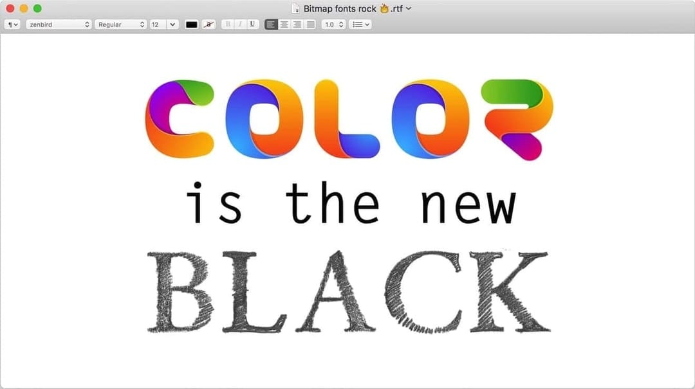
Universal Shaping Engine
By 2013 HarfBuzz was fully up to date with Microsoft’s OpenType shaping implementation (sometimes vis-à-vis bugs), having finished the Indic shaping and the more recent Myanmar shaping. Jonathan Kew and I, in collaboration with Martin Hosken of SIL, added a new shaper called the South-East Asian (SEA) shaper, based on a simplified model of such scripts. We presented this to industry partners at an OpenType meeting I organized in Seattle (one of many meetings I hosted at various Google and Facebook offices in the years since).
Then in 2014 at the Unicode Conference in San Jose, Andrew Glass of Microsoft presented the Universal Shaping Engine, using similar ideas as SEA but much more complete. As a result, we implemented it in HarfBuzz and deprecated and removed the SEA shaper. The new shaper is capable enough to take care of most complex scripts being added to Unicode, such that no new shapers have been needed since.
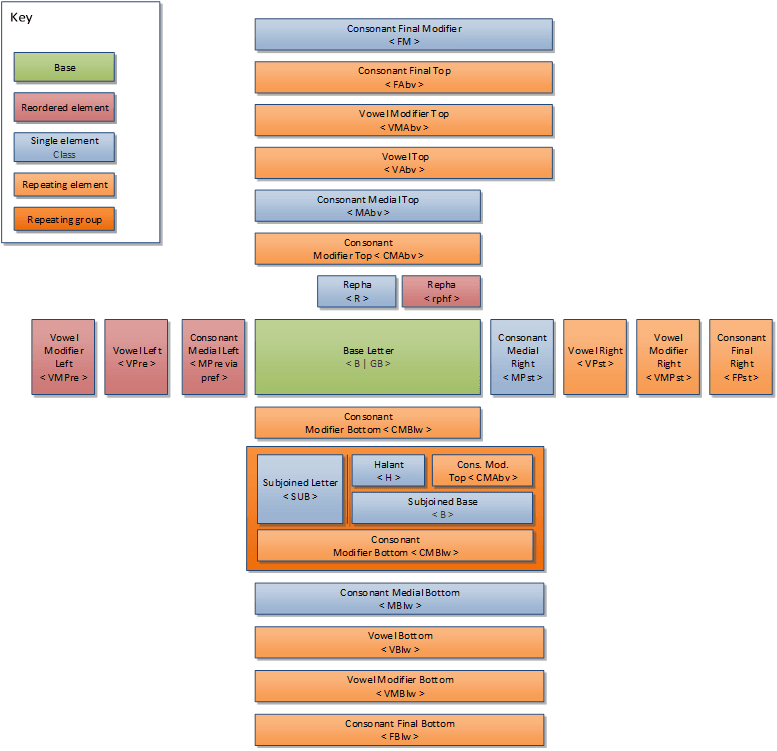
Visualized form of standard cluster in the Universal Shaping Engine. Microsoft.
Variable fonts
In 2014 I decided to revive an idea from the 1990s, which was font interpolation at run-time. This used to exist in Apple’s TrueType GX and Adobe’s Multiple Master (MM) technologies, but did not survive in the OpenType, as MM was deemed too complicated to maintain and removed from the early OpenType spec. Peter Karow’s IKARUS (1973) and then Donald Knuth’s METAFONT (1977) technologies were built on similar ideas in the 1970s, but at font generation time. Karow showed ahead-of-time interpolation at ATypI in 1976. Although, the idea of font interpolation itself goes back at least to the 1885 Benton Pantograph.
Throughout 2015 I advocated for the idea, and in February 2016 I released a blueprint for the work. In a six-month collaboration that followed between Adobe, Apple, Google, Microsoft, and invited industry experts, the feature was added to OpenType 1.8 and called Font Variations, with such fonts called variable fonts. Tom Rickner summarized the background to variable fonts in this writeup.
In a nutshell, whereas previously OpenType fonts were scalable, i.e., the font size could be arbitrarily changed (being vector fonts), with font variations, other aspects of the font, including custom aspects, can smoothly vary in shape. These aspects include, but are not limited to, font weight, width, slant, and optical size.
The v-fonts.com website has a nice collection of variable fonts from a large variety of sources and licenses, while Google Fonts has commissioned the largest single collection, all available under the Open Font License. v-fonts.com/support also maintains an excellent list of popular design application support status. Try moving the sliders to see what variable fonts can do. For more resources on variation fonts, see Axis-Praxis resources.
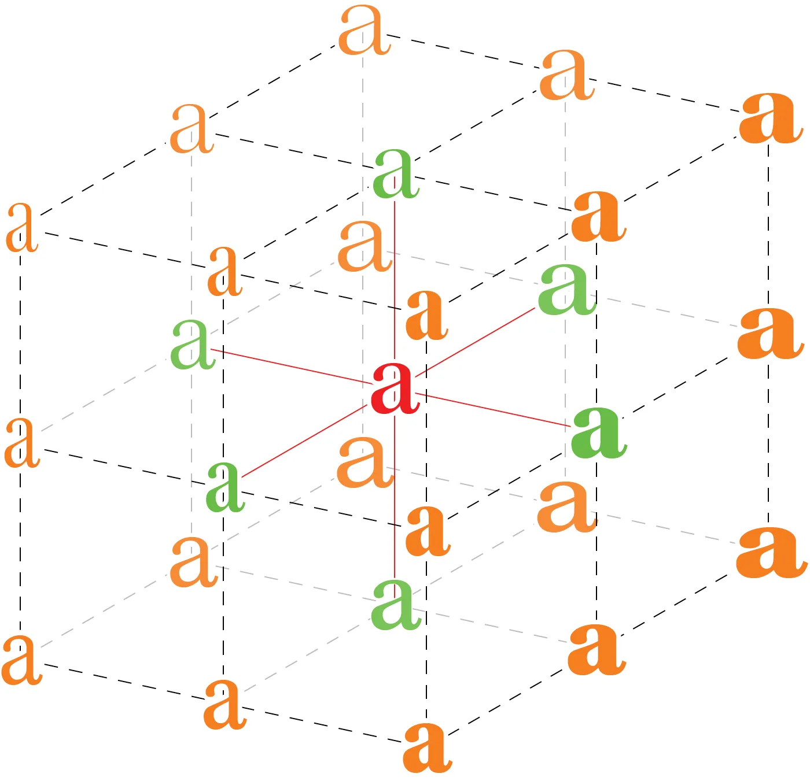
Illustration of a variable font ‘Design space’ with weight & width axes, from John Hudson’s detailed 2016 announcement article, commissioned by Microsoft.
A trio of libraries
Currently most Open Source font compilation is done with a slew of Python libraries and tools, all built on top of the FontTools platform. Font consumption on the other hand, is usually built on top of two libraries: FreeType (for general font processing with C and often rasterization) and HarfBuzz (for general font processing with C++ and very popularly for shaping).
FontTools
FontTools was originally started by Just van Rossum in 1999, as a font assembler/disassembler (ttx), an XML format for representing font tables (.ttx), and a Python API (fontTools). The XML quickly became (and still is) the de-facto way to represent font binaries in a human-readable format. The XML format even appears in Yannis Haralambous’ massive tome from O’Reilly, Fonts & Encodings. Just’s intention was to build a font editor in Python on top of FontTools. In his words: “The intended font editor didn't materialize at the time. Several attempts later, we now have Fontra :).”
By 2013 when I wanted to contribute to the library, the project was mostly dormant. After failing to get any response from Just, I forked the project and, with a team at Google, invested in vastly developing it and building the fontmake compiler on top. I managed to finally connect with Just in 2015, and he has become an active developer of FontTools again, while I maintained it for a while, before handing out maintenance to Cosimo Lupo, who was then at one of the largest font development firms in the world, Dalton Maag, and later joined the Google Fonts team.
Other than support for color fonts, variable fonts, and other table additions, FontTools has gained quite a few higher-level modules, and absorbed some others from external projects. These include: a font subsetter, a variable font (partial-)instancer, and code to work with the Unified Font Object (UFO) font source format.
The fontmake compiler is built on top of modules including ufo2ft, glyphsLib, cffsubr, skia-pathops, ttfautohint, and various FontTools modules.
Adobe open-sourced their Adobe Font Development Kit for OpenType (AFDKO) in 2014. Over time, however, most interest has moved to the FontTools/fontmake ecosystem.
Fontmake is in use by small and large type foundries equally, specially for reproducible builds and continuous integration (CI). Since FontTools is the experimentation platform for most Open Source font format development, fontmake tends to be updated to bring new features to life faster than other compilers, proprietary or open.
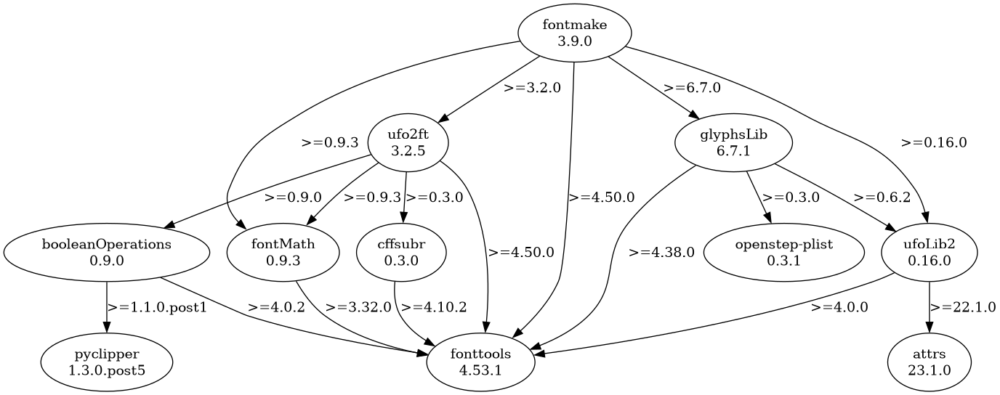
fontmake’s partial dependency graph, with fonttools at the base. pipdeptree.
FreeType
FreeType is a font access library and rasterizer, a C library originally developed by David Turner in the 1990s. FreeType is continued to be maintained by Werner Lemberg. The project saw significant contributions from Adobe in the form of a new CFF rasterizer (2013), and CFF2 variable font support (2016). Other major changes include gaining support for all color font formats including the recent COLRv1 (contributed by Dominik Röttsches), full variable fonts support (with a lot of additions by yours truly), and a new improved ftinspect utility, which was a Google Summer of Code student project.
Fuzzing and security bug fixes are often contributed by Google developers, as discovered by the oss-fuzz and Chromium fuzzing ecosystems. FreeType is a core component of text rendering, from embedded devices to all modern Linux desktop environments, to Android and ChromeOS, bringing the total installations well into the billions. FreeType is an aging C library. Buffer overflows and similar memory issues have caused several CVEs and even a 0-day in Apple products! While fuzzing has helped a lot with fixing such bugs proactively, the desire to move to a more modern solution written in a safer language remains high. There have been several attempts, including many in the Rust ecosystem. I will cover those in later sections.
To date, FreeType has had 109 CVE records.
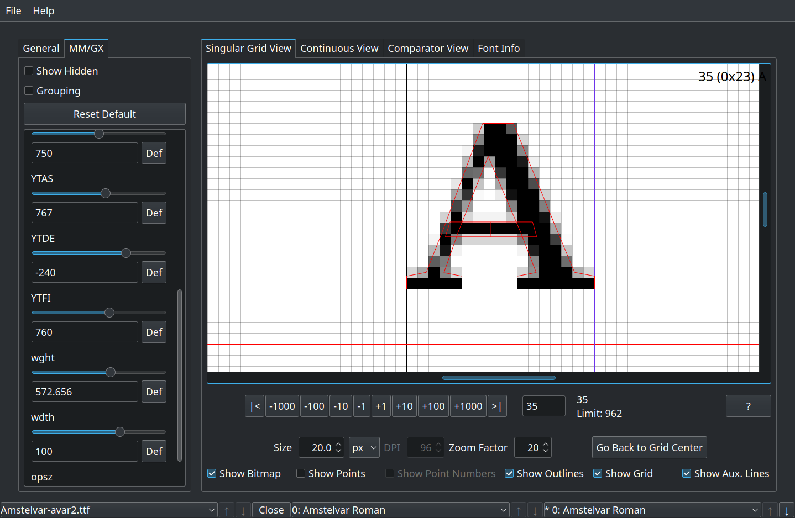
New ftinspect utility. The FreeType Project.
HarfBuzz
HarfBuzz is a text shaper written in C++ with a C API. These days it supports both OpenType and Apple Advanced Typography (AAT) shaping models. I started working on it in 2005. The rewritten version, codenamed harfbuzz-ng, was ready for public use around 2012, as a collaboration with Mozilla’s Jonathan Kew. Since then, we have kept it up to date, fixing bugs, improving performance, and adding new features beyond text shaping. More recently, David Corbett took over the maintenance of South-East Asian script support, and Khaled Hosny took over maintenance and bug triage, while I continue as the lead developer.
When I moved from Red Hat to Google’s Chrome team in 2010, one of my main motivations was to gain new market share for HarfBuzz, since the Linux desktop market was not big enough to justify continued investment in HarfBuzz, and making it relevant to font developers. Since then, HarfBuzz use saw a proliferation when Android shipped it, and Chrome and Firefox switched to using it on all platforms. It is also in use on all Linux desktop, ChromeOS, LibreOffice, OpenJDK, XeTeX, and many other projects, as well as proprietary systems like Adobe’s Photoshop, Illustrator, and InDesign, PlayStation, most smart TVs, and as far as Microsoft’s Edge browser (by way of Chromium).
The biggest addition to HarfBuzz in terms of non-shaping features has been a font subsetter and variable font (partial-)instancer, led by Google’s Garret Rieger and Qunxin Liu, respectively. These are used in various apps for printing, plus fueling Google Fonts, and in the future, Incremental Font Transfer (more on that in the next chapter).
While HarfBuzz does not come with a rasterizer, it has draw & paint APIs that can be connected to existing graphics engines to render monochrome and color fonts. This is in use by several web applications using HarfBuzz, and FontGoggles, an Open Source Mac-only font inspector and viewer developed by Just van Rossum and supported by Google Fonts.
Thanks to continued demand by Chrome, Android, and Google Fonts, HarfBuzz run-time performance and memory usage are best in the industry.
Using HarfBuzz on the web has been on the rise, first transpiled to JavaScript, and more recently cross-compiled to WebAssembly, through harfbuzzjs. Apps like Photopea, an online photo editor, use it that way. Crowbar by Simon Cozens is an OpenType shaping debugger web-app built using the HarfBuzz buffer-messaging API. Sploot is another web-app by Simon, a font inspector. Prezi and Figma also use HarfBuzz in their web-apps.
HarfBuzz has been ported to Rust and Go, and has inspired several shaping implementations in various languages. It has bindings for quite a few languages. As part of the merger of Mono and .NET, HarfBuzz is now part of the .NET API.
HarfBuzz has embraced oss-fuzz fuzzing religiously. As of this writing, HarfBuzz has had only 9 CVE records; 8 of which are denial-of-service, and only one is bad memory access.
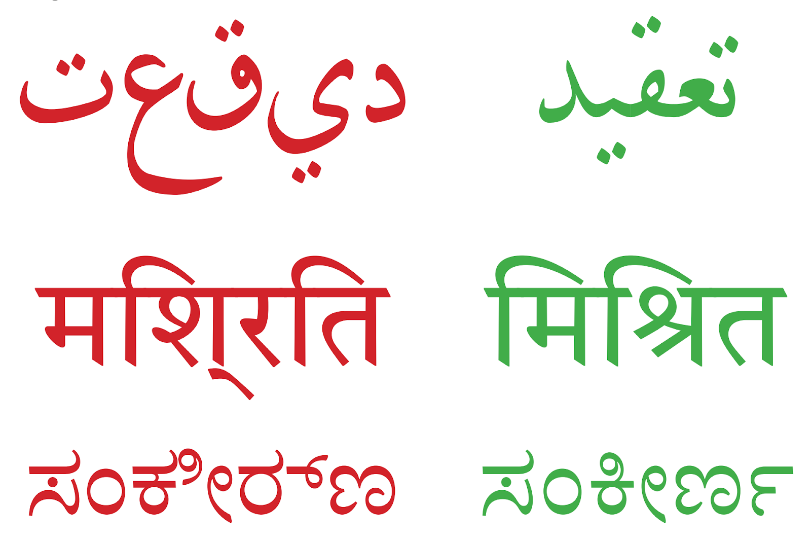
Complex text: without and with proper shaping, in various scripts. John Hudson.
Maintenance
All three projects have a fairly healthy Open Source life and community. They each have a lead maintainer, plus one or two active developers, and a long tail of less-involved developers and contributors.
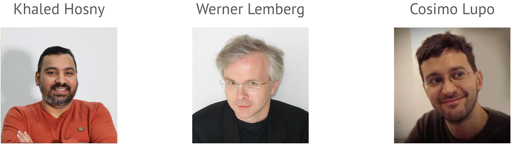
Maintainers of HarfBuzz, FreeType, and FontTools.
You might be surprised to learn that these three fundamental libraries are maintained by three developers with curious backgrounds and no formal computer science education: Cosimo Lupo, Werner Lemberg, and Khaled Hosny.
Cosimo Lupo
maintains FontTools. Cosimo studied anthropology, before becoming a font engineer and then software developer in London. All because he liked a particular print font so much! Here’s how he described it:
Back in the uni days, I was a bookworm and was fond of a particular custom Garamond (technically a Jannon) typeface from a highbrow Italian publisher (Einaudi) so much so I wanted to use that font for my dissertation. But it wasn’t commercially available so I ended up getting in touch with a guy who was working on upgrading the font from Type1 to OpenType and even drew myself the alternate lining numerals (which are never used in the publisher’s printed books). This all in my spare time while actually studying for the dissertation. After graduation I realised the hobby could become a profession and got the DaMa internship and the rest is history
Werner Lemberg
has been maintaining FreeType for over two decades. Werner is a trained musician and has been a répétiteur at various opera theaters in Germany and Austria. In his own words:
Around 1989 I wanted to write a paper on the Chinese mouth organ, the shēng (笙), and I also wanted to have Chinese characters in the text typeset by the computer and not inserted by hand. At that time there existed just a few, quite expensive programs for MS-DOS which could do that. And there was LaTeX: I was told that it actually could do what I wanted to achieve. This was my start into the world of typography.
Around 1990, only CJK bitmap fonts were freely available, and LaTeX had no support for CJK outline fonts. However, a few years later I discovered the TrueType format, finally providing good outline CJK fonts that came with no extra cost as part of Windows 3.1. I was quite excited and even considered writing a freely available rendering engine, but fortunately I found David Turner's FreeType project in 1995 that aimed at being a full-featured TrueType interpreter and rasterizer, and I soon became an active developer and later on the maintainer of this package, who I am still today.
Watch Werner and his daughter perform at ATypI 2013 Amsterdam.
Khaled Hosny
is the current maintainer of HarfBuzz. Khaled was a radiologist before becoming a full-time font engineer & software developer, based in Cairo, Egypt. His interest in fonts started with wanting a nice Arabic Naskh font. He tweeted about it here. He has also been instrumental in switching miscellaneous Open Source apps to use HarfBuzz:
So far I've helped (in a way or another) migrating LibreOffice, XeTeX, Scribus, Emacs and LuaTeX to HarfBuzz (as well as ImageMagick, Pillow and others, via Raqm).
Khaled Hosny—fixing libre text layout one application at a time. [*]

Applications
In this section I review the most prominent Open Source applications of text layout, by category.
Fontmake alternatives
AFDKO
Adobe Font Development Kit for OpenType (AFDKO) was open-sourced in 2014. Usage never picked up in the Open Source world, as fontmake was quick to fill the need for a solid compiler. AFDKO for the most part supports CFF-flavored OpenType font production, and not TrueType-flavored (the more common) one. Fontmake supports both, including variable fonts in both formats (CFF- one implemented by Adobe).
Development has slowed significantly since many influential Adobe engineers working on the code retired.
FreeType alternatives
The 2010s saw the emergence of a number of font rasterizers, most on the GPU.
CPU-based
FreeType remains the most commonly used Open Source font rasterizer. It is CPU-based. Other CPU-based solutions include: stb_truetype, RustType, and font.rs.
stb_truetype
is a single-header font library and CPU-based rasterizer, and sometimes used by smaller products with limited resources. Note: It cannot handle untrusted font data securely.
RustType
from the Redox OS project, is a FreeType alternative written in Rust, without the hinting engines.
font.rs
by the Raph Levien of Android and other fame, was developed in Rust as another CPU-based rasterizer, claiming to be the fastest rasterizer in the world. Only works with TrueType-flavored (ie. quadratic Bézier) OpenType fonts, not CFF-flavored (ie. cubic Bézier) ones.
fontdue
claims to have "the lowest end to end latency for a font rasterizer". It pre-processes fonts when loading them and converts them into custom data structures that enable very fast rasterization. It does not rely on the Rust standard library, making it usable in embedded environments.
GPU-based
Several GPU-based rasterizers were developed, of varying quality and sophistication. Some are listed below, most using OpenGL shaders and are Open Source. (TODO: Add notable clients of each.)
Whereas the existing, CPU-based, rasterization is typically coverage-based, ie. approximating the portion of each pixel covered by the shape, since a paper by Valve introduced them in 2007, Signed-Distance Field (SDF) text-rendering became a hot topic of research and experimentation.
Nicolas Rougier and I surveyed the rasterizer landscape in our SIGGRAPH Digital Typography mini-course in 2018. That slide-deck includes much more detail and a list of great further reading material and references.
freetype-gl
by Nicolas Rogier is a SDF-texture-based rasterizer.
GLyphy
by myself is a SDF-vector-based rasterizer. GLyphy does not handle overlapping glyph shapes and hence is not appropriate for use with variable fonts without external overlap removal operation.
msdfgen
by Viktor Chlumsky is a multi-channel, improved SDF-texture-based rasterizer.
Pathfinder
by the prolific Patrick Walton, is by far the most advanced rasterizer, combining a whole array of techniques and tricks to speed up rasterization. It was developed as part of Mozilla’s Servo web rendering engine. Unfortunately the project does not seem to be under active development.
Slug Library
by Eric Lengyel, is a promising but proprietary rasterizer based on the analytical solution.
NV Path Rendering
by NVIDIA, is a general path-rendering solution embedded in NVIDIA’s proprietary GPU drivers. It is not particularly text-oriented, but does have some support for TrueType outline rendering.
Performance comparison
Here is a dated performance comparison chart from the Pathfinder project. FreeType performance has been improved since, thanks to the FreeType developer Alexei Podtelezhnikov. Note that rasterization time often contributes only a small fraction to the actual rendering time due to glyph and font caching. The exception to this is the GPU-based approaches that try to rasterize on every frame, with no caching.
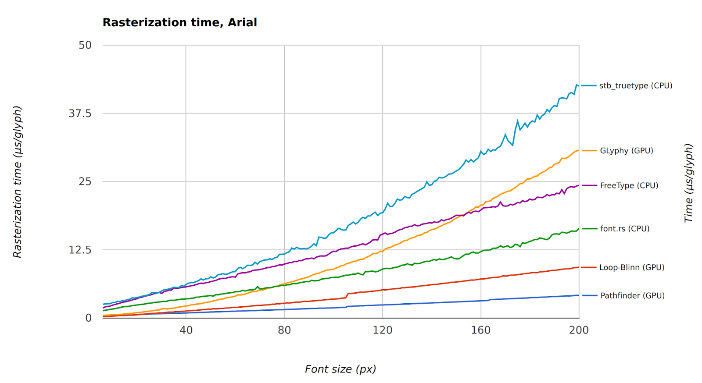
Rasterizer performance comparison of a few rasterizers. Patrick Walton.
HarfBuzz alternatives
ICU Layout
The ICU Layout Engine (ICU LE) shaper was deprecated and eventually removed from ICU, in favor of HarfBuzz. My icu-le-hb library implements the ICU LE API on top of HarfBuzz, which makes it a drop-in replacement for ICU LE.
m17n
The m17n shaper, which used Lisp as its expressive language, seems discontinued.
SIL Graphite
The SIL Graphite shaper gained support for advanced Nastaliq shaping, as used in SIL’s Awami Nastaliq Urdu Nastaliq font. HarfBuzz can be compiled with Graphite support enabled, which will use SIL’s Open Source graphite2 library to shape Graphite fonts.
Since Chrome and Android do not ship the Graphite backend to HarfBuzz, market-share remains small. Firefox supports Graphite using libgraphite2 directly, as does XeTeX. LibreOffice requires that HarfBuzz be compiled with libgraphite2 support.
Wine
Technically not a shaping engine, but Wine includes implementations of Microsoft’s Uniscribe and DirectWrite shaping engines. This makes wine perhaps the largest outstanding Open Source project that uses a shaper implementation other than HarfBuzz. The API mismatch between HarfBuzz and Uniscribe / DirectWrite makes integration difficult.
AllSorts, RustyBuzz, Swash
Three HarfBuzz-inspired shapers written in fully safe Rust.
AllSorts seems to be missing the Universal Shaping Engine among other features.
RustyBuzz is currently the most up to date with the latest HarfBuzz.
Swash seems dormant, with developer Chad Brokaw’s time spent on Google’s fontations these days. More on that in the next chapter.
Bidirectional algorithms
All three engines below are up to date with the latest version of the Unicode Bidirectional Algorithm and the Unicode Character Database.
FriBidi
by Dov Grobgeld and I, is the industry standard compact implementation of the bidirectional algorithm.
FriBidi is the first major Open Source project I contributed to, back in 1999. It is how I learned programming in C.
Being LGPL-licensed, FriBidi cannot be easily used in proprietary and embedded systems without a commercial license.
ICU bidi
by the ICU project remains the heavyweight of bidi implementations, used by projects that can afford shipping or linking to ICU, like Chromium and Android.
SheenBidi
by the Tehreer effort, is the new contender on the block. It has the advantage of being small and having the permissive Apache license.
Printing
Printing these days often happens by way of outputting PDF from graphics libraries. Since PDF is already laid out, there is no need for shaping when displaying PDFs (on paper or screen). As such, fonts can be trimmed down to remove layout-specific parts when embedding in the PDF.
PDF supports a limited number of font formats, and has not (and probably will not) be updated for the OpenType color fonts and variable fonts formats. Instead, variable fonts need to be instantiated to a static font before being embedded in PDF. Color fonts on the other hand can encode the drawing commands in what is called a Type 3 font in the PDF.
Normal fonts are also subsetted to just the glyphs used, or sometimes a new font is synthesized from scratch from the outlines of the original font.
Cairo
The Cairo 2D graphics library, while on life support, has solid PDF / PS output, including custom font subsetting logic, thanks to Adrian Johnson. Adrian, Matthias Clasen, and I have implemented color fonts and variable fonts support in Cairo. Cairo still is the underlying graphics system of GTK and hence the GNOME Desktop, and the only maintained graphics backend to the Pango text layout library (pangocairo).
Skia
The Skia 2D graphics library, used by Chrome and Android among others, has solid PDF / PS output thanks to Google’s Ben Wagner on the Skia team. This includes font subsetting logic using the HarfBuzz subsetter.
Skia, while better maintained than Cairo, has grown to be Too Big. It is such a fast-moving target with unstable API/ABI, that it is a pain to use in smaller applications.
Qt
The Qt toolkit, used by KDE among others, provides printing facilities. It consists of a custom font subsetter that has been around since ~2005.
Qt in general supports color fonts and variable fonts, but I am uncertain that those are supported in the PDF generator currently.
Font configuration & selection
Android has its own, hardcoded, XML-based font configuration system, with Minikin (see below) implementing the font fallback logic. Others in the Open Source platform usually use fontconfig. This includes the major toolkits GTK and Qt on Open Source platforms, plus ChromeOS, and Linux versions of Chrome, Firefox, LibreOffice, etc.
Fontconfig
Fontconfig, originally written by Keith Packard, is the de facto standard of font configuration and selection on Linux and similar platforms. I inherited maintenance of fontconfig from Keith Packard, and later handed it down to Akira Tagoh of Red Hat. The project is alive but low in changes. I have implemented color font and variable font support.
The problem with fontconfig is its overly expressive XML configuration language and font-selection model. It is a dated design in need of a replacement. I have ideas, but they are not developed yet. The Rust migration (covered in the next chapter) might be a good time to redesign fontconfig. Or we can call Lennart Poettering in. 😀
Layout engines
Minikin
Minikin, originally by Raph Levien, underlies text layout in Android. It is built on top of HarfBuzz, ICU, and is combined with Skia as the graphics system. It has little use outside Android.
Pango
Pango underpins GTK toolkit and GNOME Desktop, among other applications. Pango uses FriBidi and HarfBuzz on all platforms, and FreeType & Fontconfig on Open Source platforms. Pango’s primary integration, and the only one actively maintained, is with the Cairo graphics library: pangocairo.
Since I moved from Red Hat to Google in 2010 and my focus shifted on HarfBuzz solely, Pango became unmaintained, until Matthias Clasen, the GTK maintainer, picked it up.
Pango development has been slow, but as my own testing bed for new features, Pango has properly been ported to use HarfBuzz on all platforms, and added color font and variable font support in the pangocairo backend.
Raqm
Raqm or libraqm, by the Omani HOST team and led by Khaled Hosny, is a nimble but important layout engine built on top of FreeType, FriBidi or SheenBidi, Fontconfig, and HarfBuzz. It is designed to be easy to plug into applications that previously performed text rendering using FreeType, with no bidirectional or complex text support.
The Omani HOST team also ported several such applications to use Raqm. According to the project homepage, Raqm is used in ImageMagick, LibGD, FontView, Pillow, mplcairo, CEGUI, among others. There are patches for SDL_ttf, Pygame, and Blender.
Skia Text
The Skia 2D graphics library implemented text layout in terms of the Text API. See it in action on the Skia CanvasKit WebAssembly demo page.
Prominent users include the Open Source Flutter GUI toolkit from Google, and Zoho Writer, a Google Docs-like word processor that runs in the browser.
QTextLayout
QTextLayout, part of the Qt Project, is the layout engine underlying KDE, among other apps. It has been ported to the new HarfBuzz, and uses HarfBuzz on all platforms for a while now. Qt uses its own BiDi algorithm that should be fully up to date and compatible with the latest version of the Unicode spec.
Qt supports OpenType Layout features in the API.
Color fonts are supported, but currently Qt does not support all color font formats on all platforms. Qt does not do any rasterization of these itself, but depends on system rasterizer for this. Specifically, Microsoft COLR fonts are only supported on Windows at the moment (although Freetype support should also be possible). And SVG-based color fonts are not supported on any platform.
Variable font support was expanded recently. A user can select specific named instances of the font the same way they would previously select sub-families. In addition, custom values can be supplied for any axis using API which was added in Qt 6.7.
There are three different approaches which can be enabled depending on user preference and use case for rasterization and rendering:
Glyphs pre-rasterized into an atlas by system rasterizer at specific size.
SDF-texture-based atlas stored in texture and sampled in fragment shader.
Curvature data passed as vertex attributes and distance to curve calculated in fragment shader, which is more expensive but does not have the artifacts caused by the SDF-texture-based approach.
For more on these features see this post.
GUI toolkits
Generally, the toolkits commonly in use do not render text correctly, as described in this article from 2015. The lack of linear alpha blending and gamma correction leads to suboptimal looking text on both bright and dark backgrounds, compared to Windows and macOS. The notable exception is Qt 5.9+ when rendering CFF(2) fonts (font files usually with the .otf extension), which will automatically do the right thing. You’ll see that CFF(2) fonts render thicker compared to the same font version as a TTF file.
GTK
GTK, renamed from GTK+, is the GUI toolkit underneath the GNOME Desktop, among other applications. GTK 3 was released in 2011 and inherited the capable text layout engine Pango from the GTK 2 era.
GTK 4 released in 2020 still uses Pango, and Cairo for graphics. But graphics composition moved to the GPU.
GTK 5 is currently under design. There have been experiments with GPU-based rasterizers, but there have been no conclusions yet. Matthias Clasen wants to remove the dependence on Pango and to absorb the HarfBuzz-based text layout from Pango into GTK itself. At this point, it seems unlikely that the absorption happens in GTK 5, but if and when that happens, it will endanger other users of Pango significantly.
Qt
Qt has two main UI toolkits: Qt Widgets and Qt Quick. The former is C++-based and software-rendered and the latter is hardware-rendered and the frontend is typically written in a Javascript-like markup language called QML.
The fundamental font and text handling is shared between the two, using QTextLayout as the main entry point, but Qt Quick has more options for how the text is rendered, as listed earlier under QTextLayout.. Qt Widgets will always use the pre-rasterized glyph atlas approach.
Qt enumerates fonts using system functions and applies its own font matching logic. Harfbuzz is used for shaping once a font has been selected.
Flutter
Google’s Open Source Flutter GUI toolkit released in 2017 originally used a fork of the Android Minikin layout engine (called libtxt). That has been retired in favor of the Skia Text layout engine.
EFL
EFL text rendering is built on top of FreeType, Fontconfig, and HarfBuzz. Color fonts (color emoji use primarily) are supported, Bidirectional text as well. Rasterizing is left to FreeType with accelerated rendering done via font glyph texture atlases and triangle geometry pairs per glyph to lay out if using GPU acceleration. In software rendering, gylph data is compressed runtime with RLE 4 bit (or raw 4bit, depending on glyph size) to speed up rendering via fewer memory accesses.
Operating-systems
Android
Google’s Open Source Android mobile and tablet operating-system has excellent support for complex text, color fonts, and variable fonts. It uses its bespoke Minikin layout engine, which in turn was ported, originally to HarfBuzz.old, and later to harfbuzz-ng, the current version of HarfBuzz. It uses ICU for bidirectional text and other Unicode APIs, and FreeType for font loading, through the Skia 2D graphics library.
ChromeOS
Google’s Open Source ChromeOS laptop operating-system is primarily based on the Chrome browser and custom code for UI. ChromeOS text support is as good as Chrome’s in general, which includes solid complex text, color fonts, and variable fonts support.
Linux Desktop
Mostly based on either GNOME or KDE desktops, both of which have solid text rendering support, using Fontconfig, FreeType, and HarfBuzz as common components, by way of the GTK and Qt GUI toolkits respectively.
Web browsers
Google Chrome / Chromium
Google Chrome and the Open Source Chromium browsers use Google’s Open Source Blink engine. Google forked Blink from Apple’s Open Source WebKit engine.
Unlike its parent, WebKit, Blink uses HarfBuzz on every platform. This allowed for removing multiple layers of abstraction from the code-base, simplifying its extension and maintenance. It also enabled using HarfBuzz’s auxiliary API and features that are not available through native libraries (Microsoft’s DirectWrite and Apple’s CoreText). Shaper-driven font fallback and universal AAT layout support are two such features.
Moreover, Blink ships FreeType on all platforms. A hybrid rendering architecture was devised by Dominik Röttsches, which allows switching to FreeType to rasterize newer font technology (like color fonts and variable fonts) even on operating-system versions that do not implement the feature in their system libraries. In this way, Chrome has an edge over system-native browsers like Safari and the earlier versions of Microsoft Edge.
Chrome’s text rendering is led by Dominik Röttsches, after the late Emil Eklund moved away from the project.
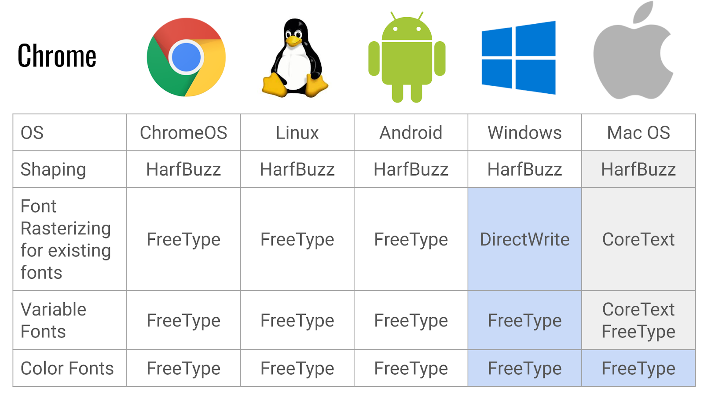
Chrome’s hybrid text rendering architecture. Dominik Röttsches.
Firefox
The Open Source Firefox browser uses Mozilla's gecko engine. It uses HarfBuzz on all platforms. Gecko implements color font support itself, instead of using any other library. Jonathan Kew is responsible for most text rendering at Mozilla.
An experimental engine Servo originally launched by Mozilla as a successor to Gecko, is implemented in Rust. Mozilla eventually abandoned it when Mozilla Corporation announced laying off a quarter of its staff in 2020 and transferred to The Linux Foundation, then in 2023 to TLF Europe. While still experimental, it has been under active development again since 2023. Servo currently uses Rust bindings to Harfbuzz.
Microsoft Edge
The successor to Internet Explorer released in 2015, using Microsoft’s DirectWrite library (successor to Uniscribe) and Microsoft’s web engine. In 2018 Microsoft announced that it will switch Edge to use Google’s Open Source Chromium project. The first such version was released in 2020. Since this migration, and hence using the Blink engine, Microsoft Edge now uses HarfBuzz for text shaping as well.
Safari
Apple’s flagship browser is built using Apple’s Open Source WebKit engine, and uses Apple’s CoreText library (successor to ATSUI) for font processing.
Due to Microsoft Edge switching to Chromium, Safari is currently the only major browser that does not use HarfBuzz for text shaping.
GNOME Web
The Open Source GNOME Web browser, formerly called Epiphany, and some other browsers, use the webkit-gtk engine, a backend to Apple’s Open Source WebKit engine (which is what Apple’s Safari uses). webkit-gtk uses FreeType and HarfBuzz for text rendering.
Konqueror & falkon
The Open Source KDE browsers use the Qt WebEngine these days, which is based on Chromium.
Word processors
LibreOffice
The Open Source word processor LibreOffice was forked from OpenOffice.org in 2010 (not to be confused with another fork, Apache OpenOffice). An initial stable release was provided in 2011. Collabora is the primary company behind LibreOffice, and it has garnered orders-of-magnitude more users than other descendants of Sun’s StarOffice.
Thanks to immense efforts by Khaled Hosny and others, LibreOffice also uses HarfBuzz on every platform, and advanced features like shaper-driven font fallback. LibreOffice’s complex text support has been vastly improved, with solid bidirectional text support, shaping, line-breaking, justification, as well as OpenType feature selection, color fonts (no COLRv1 yet), and variable fonts (only named instances currently), and uses HarfBuzz heavily for the more modern features, especially in PDF export.
AbiWord
The GNOME-oriented AbiWord seems to have lost market share and resources to LibreOffice. While still breathing, it seems to be on life support. By way of using Pango, it seems to have some color-font support. Support for other modern font features remain missing, probably indefinitely.
Calligra Words
Calligra Words replaced KDE’s KWord in 2012. It does not seem to support color fonts or other modern font features. It seems to support basic bidirectional and complex text by way of using Qt.
Google Docs
While not Open Source, Google Docs is worth mentioning as it has solid bidirectional and complex text support.
There is no support for OpenType features. Color emoji work, but otherwise color fonts are not an option. Variable fonts’ weight axis is the only axis that is usable, as there is no UI for style selection other than the 9 weights + italics that were supported before variable fonts.
Design tools
Blender
The Open Source Blender 3D creation suite currently does not support bidirectional or complex text shaping. There exists a patch to use Raqm for text layout, which, if merged, will make basic support available.
GIMP
The Open Source, GTK-based GIMP image editor currently uses the Pango layout engine for text layout. Although there is support for OpenType features and variable fonts through a plug-in, this does not have an interactive user interface. Currently, color fonts will generally render either with their default colors, or in monochrome. Work is ongoing to add support for OpenType features, variable font axes, alternate characters, and more, using a new desktop font service, but this is at early stages.
Inkscape
The Open Source, GTK-based Inkscape vector editor uses the Pango layout engine for text layout. At least some OpenType features are supported. Color fonts render in their default palette. However, since Inkscape is an SVG editor, it is possible to add CSS properties to the SVG using the built-in XML editor and achieve more effects.
Krita
The Open Source, Qt-based Krita image editor has fairly simple text support in its current stable release, but work is being done to move to Raqm and libunibreak, and more. Currently, OpenType features and color fonts are not supported, but the in-progress work has been demonstrated and shows excellent results.
Scribus
The Open Source, Qt-based Scribus desktop-publishing application uses FreeType, HarfBuzz, and other libraries directly. There is support for OpenType font features in the Development release (1.7.0 was tested). Color fonts render in their default colors. There does not seem to be support for variable fonts.
Adobe Photoshop, Illustrator, InDesign
Adobe’s proprietary flagship apps were updated between 2019 and 2023 to use HarfBuzz under the hood of their World-Ready Composer.
Sadly though, the World-Ready Composer is not the default composer in Illustrator and InDesign. As such, still many designers typeset text in complex scripts they do not read using the default composer and get the wrong shapes. 😡 Photoshop, however, uses a Unified Text Engine. Unlike Photoshop and InDesign, the Illustrator switch to HarfBuzz was never publicly announced.
It gets ironic: Here is a picture I took of a slide presented at a keynote by Pankaj Joshi of Adobe at the BITS9 conference on typography in Chiang Mai, Thailand, in 2019, about support for South-East Asian script in Adobe products:
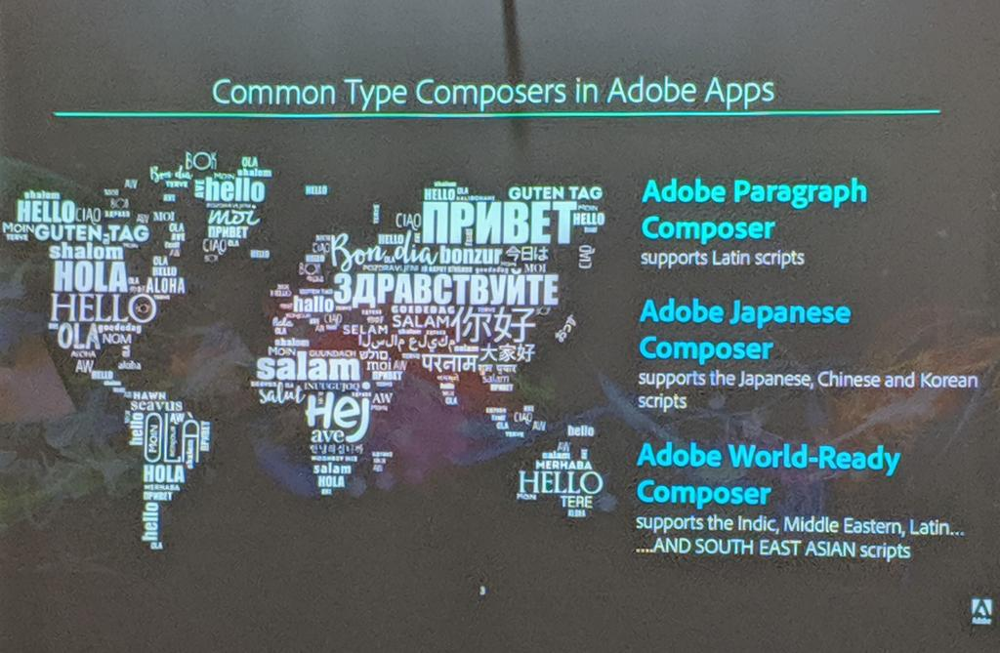
Slide by Adobe product-manager Pankaj Joshi displaying broken complex text.
I kid you not: all complex text rendering in that slide is b0rked!
Figma
Figma is a proprietary design tool that works in the web browser among other platforms. It uses HarfBuzz for shaping, and ICU’s bidi implementation.
There is an OpenType Layout features panel, where people can toggle the font features.
Figma does not currently support color fonts. Variable fonts are supported.
Canva
(TODO)
Font design tools
FontForge
The venerable Open Source font design tool from George Williams started its demise when George retired from it in 2012. Since then there have been efforts (and a couple of forks, including Sorts Mill by Barry Schwartz and Khaled Hosny) to keep it alive, but by the late 2010s the project had become dormant. Dave Crossland’s efforts to fund the project’s development dried up.
FontForge is a large, aging C codebase (~1M SLOC) that crashes often and is hard to work with. It lacks support for the more modern font features.
That said, FontForge is still the most viable font design tool available on Linux, and as such still in use.
GlyphrStudio
An Open Source web-based font design tool that has been around since 2010, “focusing on font design for hobbyists”.
Fontra
The new, Open Source and web-based, font design tool on the block, promises to transform the Open Source font design tool landscape. I cover that in the next chapter.
TruFont
The Open Source TruFont was a short-lived effort by Adrien Tétar to build a UFO-based font editor for Linux. A RoboFont (described below) clone of sorts.
BirdFont
A hybrid Open Source / proprietary font design tool for various platforms, including Linux. While the Open Source & free versions seem to lack modern font technologies, the commercial license is significantly cheaper than the prominent proprietary tools listed below.
FontLab
The former champion proprietary font design tool FontLab had its first major release after FontLab Studio 5 (2005) as FontLab VI in 2017. This added support for new technology like color fonts and variable fonts. FontLab 8 is the current major version.
FontLab can import/export font sources from/to the UFO format, which enables interoperability with the FontTools/fontmake ecosystem.
Glyphs
Built by a type designer, Georg Seifert, Glyphs is a proprietary font design tool for the Mac. It was built partly by porting the fonttools font assembler to ObjectiveC by Georg. In the 2010s Glyphs rose the ranks to become the most-commonly used font design app amongst new users big & small.
Glyphs 1 was released in 2011. Glyphs 2 released in 2015 brought support for color fonts, and later 2.x versions brought variable fonts support in late 2016. Glyphs 3 released in 2020 is the current major release..
Glyphs uses its own text-based source file format, which the Open Source glyphsLib package can read/write and export to UFO, enabling interoperability with the FontTools/fontmake ecosystem.
RoboFont
Built by another type designer, Frederik Berlaen, the proprietary RoboFont is another font design tool for the Mac, built in Python on top of the fonttools ecosystem, and with a focus on Python scripting. It uses UFO as its native font source format, which makes FontTools/fontmake interoperability a first-class experience.
RoboFont is taught at, and most commonly used by the graduates of, the TypeMedia MA program at the Royal Academy of Art, in The Hague.
RoboFont supports variable fonts. (TODO What about color fonts?)
Terminal emulators
Many Open Source terminal emulators have added support for bidirectional text and complex text rendering. These include Kitty and vte-based terminals (bidi only). Wez's terminal emulator, wezterm, in addition to bidi has font shaping support using harfbuzz.
Egmont Koblinger, a vte developer, wrote Bidi in Terminal Emulators which lays out the way vte works.
Here is a (probably outdated) gist of the terminal emulators supporting bidirectional text. Here is another listing of terminals that support some minimum Unicode clustering. (TODO What else?)
The Mac Terminal also supports bidirectional and complex text output. The new Windows Terminal seems to have some basic bidirectional text and Arabic support.
Terminal text editors
Emacs
Emacs used to have support for the m17n shaper for complex text handling. Since Emacs 27.1, the default shaper is now HarfBuzz in the non-terminal versions of the editor. However, Emacs uses HarfBuzz selectively: it has some regex that enables shaping only for specific Unicode ranges. ASCII, for example, does not go through HarfBuzz by default.
Emacs uses a Lisp bidirectional algorithm implementation.
Vim
Vim has built-in bidirectional text and some Arabic shaping support. I am unsure about the status of any further complex text support in the non-terminal versions of vim.
Batch document processors & TeX engines
The XML-based document processing workflow never really took off, at least not in the Open Source world. The batch document processors that emerged are prominently TeX-related: SILE, XeTeX, and LuaTeX.
Typst
A new Rust-based typesetting system using the HarfBuzz Rust port RustyBuzz for text shaping. One of the Typst developers, Laurenz Stampfl, is influential to keeping RustyBuzz up to date with the latest HarfBuzz.
SILE
The SILE Typesetter, originally by the project-minting-machine Simon Cozens and now maintained by Caleb Maclennan, is a new typesetting engine. From the project page: “Conceptually, SILE is similar to TeX—from which it borrows some concepts and even syntax and algorithms—but the similarities end there. Rather than being a derivative of the TeX family. SILE is a new typesetting and layout engine written from the ground up using modern technologies and borrowing some ideas from graphical systems such as InDesign.”
SILE defaults to using Harfbuzz via Lua bindings (although using other shapers is possible) and has full support for OpenType features and variable fonts and partial support for color fonts.
XeTeX / XeLaTeX
XeTeX, as originally developed by Jonathan Kew, was a descendent of the eTeX engine, using Apple’s ATSUI system library for shaping. In 2013, Khaled Hosny ported it to HarfBuzz for shaping.
LuaTeX / LuaLaTeX
LuaTeX, the pdfTeX derivative adding Lua as an embedded script language, is the current trunk of the TeX family. It uses pdfTeX for the (frozen) 8-bit engine.
Complex text support in LuaTeX is more complicated:
LuaTeX’s “philosophy” is that “it provides solutions, not answers”. So instead of integrating with HarfBuzz like a normal application would do, it provides extensive callbacks that allow Lua code to replace parts of the TeX machinery, including loading fonts and laying out text.
The ConTeXt team (the main people behind LuaTeX, with ConTeXt being a macro package alternative to LaTeX), have OpenType layout implemented entirely in Lua (originally it used parts of fontforge, integrated into LuaTeX and exposed as Lua module, for loading fonts, but it has since been doing in entirely in Lua, though the fontforge code is still part of LuaTeX).
Khaled Hosny provided HarfBuzz as another Lua module integrated into LuaTeX, then updating the Lua code to alternatively use that module. But the LuaTeX team initially rejected his code contribution, so Khaled forked it as harftex, but the LuaTeX team later integrated his code without even consulting him. So harftex was retired.
The real use of HarfBuzz occurs in the luaotfload TeX/LaTeX package, and it remains to be optional. See this article by Khaled summarizing his work.
Finally, LuaHBTeX, is LuaTeX with HarfBuzz bundled. It is the default binary for LuaLaTeX, but using HarfBuzz still requires loading the luaotfload package and activating the non-default HarfBuzz integration.
Fonts
Good Open Source fonts are a requirement of a great text rendering experience. While there exist many Open Source high-quality font projects, two collections are worth calling out: Noto fonts and Google Fonts.
Noto fonts
Google’s Open Source Noto fonts (Noto as in no tofu) are the default font family on Android for writing systems other than Latin, Greek, and Cyrillic, which use Roboto. They replace the earlier Droid fonts. Noto is, by most measures, the largest font family ever developed. It comes mostly in Noto Sans and Noto Serif families, each of which contain more than 200,000 glyphs!
Noto fonts have been embraced by Fedora and other Linux distributions. Some parts also ship in Apple products.
Noto is comprised of three components:
Noto fonts
Noto fonts for most writing systems were originally outsourced to Monotype. In 2014, while at the Google Internationalization (i18n) Engineering team, with Roozbeh Pournader, we convinced our management chain to get true font sources from Monotype, and to compile them with a font compiler we would build, which turned out to be fontmake.
Other-Noto-fonts are maintained by Simon Cozens these days, supported by Google Fonts.
Noto CJK
The Chinese, Japanese, and Korean Noto fonts are co-funded by Google and designed by Adobe, which itself outsources the design to major East-Asian type foundries. Adobe releases the same designs under the Source Han Sans and Source Han Serif names.
Unfortunately, to my disappointment, the Noto CJK fonts and their Adobe counterparts are not really Open Source. They are simply provided as in Free Beer, without true sources.
Noto Emoji
The Noto Emoji font was originally a monochrome font that emerged from Android’s Droid Emoji fonts. I added support for building Noto Color Emoji in 2013, and since then it has been ported to support COLRv1 and other color-font formats by the Google Fonts team. These days, there is a monochrome, variable, font Noto Emoji, and a Noto Color Emoji for the public to use, which is built using nanoemoji, a color-font compiler from Google that is also used by Microsoft, among others.
Google Fonts
Google Fonts is Google’s font serving infrastructure and font directory/catalog, mainly focused on CSS web fonts, but also “Downloadable Fonts” as part of Google Android (not AOSP). Google Docs software engineer David Kuettel started the team in 2009 with his colleague Jeremie Lenfant-Engelmann, and soon recruited Raph Levien (software engineer), Dawn Shaikh (user experience research, with a PhD on font selection), Tobias Kunisch (UX designer, who led design of catalog web app v1 for the 2010 launch at Google I/O and v2 in 2011), and David Wurtz (product manager). As a web application it is not Open Source, but the fonts it serves are all Open Source.
Google Fonts commissions many new Open Source font families, and makes over 1700 font families available under the Open Font License.
Google Fonts has the potential to streamline packaging of over a thousand font families by Linux distributions, tight integration into Linux Desktop / ChromeOS font installation, and online font selection and automatic installation. So far, neither of these potentials have been explored, though there seem to be third-party apps to do font installation.
The Web
The web platform has kept up with new font-format features. See also the Web Alamanac 2024 chatper on fonts for some interesting stats on web font technology usage.
CSS
CSS has been updated to support various new font technologies:
OpenType features are supported through font-variant (and its longhands) and explicitly through the font-feature-settings properties.
Color-font palette selection is supported through the font-palette property.
Variable fonts are integrated into the font selection and resolution system: font-size (size), font-weight (wght axis), font-style (slnt axis), font-stretch/font-width (wdth axis), and font-optical-sizing (opsz axis). Variations can also be explicitly specified using font-variation-settings, though notably, that property does not cascade as one would like.
CSS introduced the unicode-range property, which allows webfonts for larger writing systems to be cut down into smaller chunks that can be downloaded separately as needed. While this mechanism has its limitations, namely, breaking shaping across the different chunks, it has had its use in webfont serving. It is my hope that it would be superseded by the Incremental Font Transfer technology eventually.
CSS has also been updated to support the bidi isolates (through unicode-bidi), though HTML's dir attribute is the recommended method for HTML documents.
HTML
An addition to HTML was dir=auto (which is the default value for <bdi>); it not only applies isolation, but also uses UAX#9's first-strong heuristic to determine the directionality of the isolation. (It's dumb and often wrong, but easily manipulatable and gives results consistent with plaintext.)
HTML also silently updated its dir attribute to apply bidi isolation, instead of embedding.
WOFF2
WOFF2 is the second and vastly improved version of the Web Open Font Format. It is not a new font format but a compression format for web fonts. It is backed by the Google-developed Brotli compression format and an array of custom font table transformations. It provides significant font file size savings over raw OpenType and the previous WOFF format version 1.
Auto-hinting
Auto-hinters are part of the font design/production process. They produce font hinting data to be embedded into compiled fonts, to improve rasterization at low sizes.
The Raster Tragedy is standard reading for understanding hinting. It was last updated in 2018.
psautohint
was born by extracting the CFF auto-hinting logic from Adobe’s open-sourcing of the AFDKO by Khaled Hosny in 2016, before Adobe embraced it in 2018 and funded Khaled’s work on it. It is the de facto standard for hinting CFF-flavored OpenType fonts.
It has recently been deprecated though, by a Python rewrite called otfautohint, which is part of AFDKO and unfortunately not shipping as a separate project.
ttfautohint
by Werner Lemberg of FreeType fame, is a font ahead-of-time auto-hinter for TrueType-flavored OpenType fonts, based on the FreeType run-time auto-hinter. Like the run-time counterpart, it supports a wide variety of scripts, thanks to support from Google’s Noto fonts and Google Fonts projects. Small and big type foundries alike use it.
Note that for technical reasons, ttfautohint has not been updated to support variable fonts. Auto-hinting variable fonts across the designspace is a Hard Problem™.
Game engines
Godot Engine
The Open Source Godot Engine supports complex text rendering using HarfBuzz. (TODO: Other features?)
Unreal Engine
The proprietary Unreal Engine supports complex text rendering using HarfBuzz. (TODO: Other features?)
Unity
The proprietary Unity engine announced support for complex and bidirectional text rendering using HarfBuzz and ICU in late 2024. (TODO: Other features?) Two open source packages (Calligraphics and TextMeshDOTS) providing world space text rendering for the Unity DOTS framework, have either announced or implemented HarfBuzz , to support full complex and bidirectional text as well as COLRv1 fonts.
Looking forward
In this chapter I briefly survey what is underway in the font-format extension and the Open Source ecosystem in terms of new developments.
Better-Engineered Font Formats
In 2021 I made a public presentation called Better-Engineered Font-Formats (slides / video / Simon Cozen’s notes), in which I laid a three-part plan for the future of the font format and platform: Boring Expansion, Better Ergonomics, and Beyond Emulation. These ideas were prototyped and further presented to the community and industry by Dave Crossland and I at the OpenType 2.0 session at ATypI Paris 2023 (better slides / video).
Boring Expansion: Incremental font-format improvements
Boring Expansion is a collection of incremental proposed extensions to the font format that I spec’ed and prototyped in FontTools and HarfBuzz (as experimental features) in 2022. Since then, with the Google Fonts team, and technical-writing help from Liam Quin, we have proposed them to the ISO OpenFontFormat. If accepted, they will eventually make their way to OpenType, and other implementations.
The main proposals are summarized below. See the project page for more details including motivation and specifications.
avar2
A simple but impactful update to the OpenType 1.8 Font Variations model, the avar version 2 table enables many desired designspace configurations currently impossible.
Cubic glyf outlines
Cubic outlines in the TrueType-flavored OpenType glyf table will reduce font compilation rounding errors and save a few percentage points in font-file binary size.
Variable composites / components
Variable composites / components is a font design paradigm where glyphs can be constructed from varying components across the designspace. This can cause significant font-file binary size savings for writing-systems like those used by Chinese, Japanese, and Korean languages. In a test Korean (Hangul) font face, we have achieved a size reduction of 92% using this technology, resulting in a font that is only 8% of current OpenType equivalent!
Beyond-64k
Beyond-64k aims to break the 64k limitation in the number glyphs per OpenType font. This is important for developing complete Chinese, Japanese, Korean fonts given the addition of many thousands of new ideographs to the Unicode Standard, and building pan-Unicode font families like the Noto fonts.
Better Ergonomics: Rust migration and unification
While my proposed use of flatfonts fell flat on its face, better ergonomics for building and consuming fonts have lived on in terms of Google’s Oxidize effort to port both font compilation and font consumption (font access initially, followed by shaping) platform to the Rust programming language. This has a huge impact on software security because of Rust language’s safety guarantees while dealing with untrusted font data as in web-fonts. Moreover, this has the potential to remove sandboxing of text rendering on certain platforms, like Google Chrome.
Moreover, the fontations platform, which is the Rust framework Oxidize is producing, will unify font compilation and consumption, reducing the number of places new font-format features need to be implemented from three (FontTools, FreeType, and HarfBuzz) to one (Fontations), which would reduce development cost and overhead.
Chromium Canary ships a font backend as an alternative to FreeType under a run-time flag, and using fontations for certain less-commonly-used font formats.
Font compilation
Fontmake is to be replaced by fontc built on top of fontations.
Font access and drawing
One existing solution is RustType from the Redox OS project.
In the fontations land, FreeType is to be replaced by fontation’s skrifa. Subsetting is to be replaced by klippa. Fontations does not itself contain a rasterizer (currently), but relies on existing graphics systems for rasterization, which is the same way Skia (and hence Chrome & Android) currently use FreeType.
Chad Brokaw has also been responsible for the monumental task of porting FreeType’s TrueType hinter, CFF hinter, and autohinter to the fontations platform.
Shaping
HarfBuzz is most likely to be replaced by RustyBuzz, by Yevhenii Reizner (RazrFalcon), in the Rust ecosystem. RustyBuzz uses Yevhenii’s ttf-parser for font access. There is a desire to port RustyBuzz to use fontations instead, an effort called HarfRuzz.
RustyBuzz, a direct port, is not the only Rust effort to recreate HarfBuzz shaping. AllSorts is another HarfBuzz-inspired Rust text shaping engine by YesLogic and extracted from the Prince proprietary PDF generator. So is Chard Brakow’s more recent Swash.
Other layout efforts
Fontations is not the only Rust effort to build a modern text layout system. Other projects, like cosmic-text, already ship respectable text layout systems in Rust.
Rasterizers
For rasterization, on the CPU there are: RustType, Raph Levien’s earlier font.rs, Chad Brokaw’s more recent zeno, mooo's fontdue On the GPU, there is Patrick Walton’s earlier Pathfinder, and Raph Levien’s more recent vello, which is a more experimental, general vector rasterizer.
Font configuration and selection
Fontconfig-compatible font selection half-libraries exist in terms of fontdb by Yevhenii Reizner, and fontique.
Bidirectional algorithm
There is the unicode-bidi crate by the Servo team.
Beyond Emulation: Fully-programmable fonts
Finally, I proposed that the future of font shaping and drawing/painting will involve a fully-programmable paradigm. I proposed WebAssembly (Wasm), and went ahead to prototype the shaping aspect in HarfBuzz’s Wasm shaper using the wasm-micro-runtime Wasm engine. Simon Cozens, as usual, implemented several impressive examples, because why not!
Two tongue-in-cheek mis-uses of the HarfBuzz Wasm shaper appeared recently: the Bad Apple font, and llama.ttf. Check them out! To be clear, in a solid implementation of the Wasm shaper, acts like llama.ttf will not be possible because of CPU time budgets enforced. Bad Apple will become much easier and faster when we introduce the draw API in Wasm.
I will delve on the motivations and design for this in a separate whitepaper, due to release in a few weeks, if not days. (TODO: Finish whitepaper.)
There is currently work going on by Abdul Rahman Sibahi to add Harfbuzz-style Wasm shaping to RustyBuzz using the wasmtime Wasm engine.
Drawing and painting API will eventually come to HarfBuzz, probably in 2025.
Other efforts
Fontra
While many attempts have been made into building open source font editors, and even web-based open source font editors, by many venerable engineers, the Fontra app by Just van Rossum et al. and supported by Google Fonts seems to be the one most likely to succeed.
Fontra is under active development, and supports advanced features like multi-user collaboration and the variable-components design paradigm. Check out the 1-hour demonstration and discussion video.
Fontra uses .designspace + .ufo for storage, but can also use its own .fontra source format. The .fontra format is not stable, and its structure is similar to .glyphspackage. With some limitations, it can read .ttf, .otf (including variable fonts) and .glyphs and .glyphspackage. Fontra’s server-side is built on top of the FontTools ecosystem, while the client-side contains custom JavaScript code.
Incremental Font Transfer
Incremental Font Transfer (IFT) is technology under development at W3C and currently at the Working Draft stage. It has been in the making since 2018, and currently led by Google Fonts engineer Garret Rieger. Google Fonts’s Roderick Sheeter, Adobe engineer Skef Iterum, and ex-Apple engineer Myles Maxfield have also made significant contributions.
The technology, when made available, allows for streaming fonts to web browsers and other systems as support for new characters becomes necessary. This would significantly reduce bandwidth required to use web-fonts for large scripts like Chinese, Japanese, and Korean, and large font families like the Noto fonts, while maintaining shaping fidelity, unlike the unicode-range hack. See Chris Liley’s recent IFT Explainer for details.
I outlined how such a protocol might work in my 2018 whitepaper Faster Horse. That became the core of the dynamic-subsetting aspect of the technology. It defines a protocol and is agnostic to specific server-side implementations. But one way this can work is to use the fast HarfBuzz subsetter or another fast subsetter for live subsetting, diffing, and sending font patches using the Brotli font compression platform. This was considered and evaluated for several years. More recently, Adobe proposed an approach (called IFTB) that avoids dynamic web-serving and uses static resources only, which would simplify the serving component.
The two proposals have now been unified in a new specification, which still allows for some dynamic subsetting and serving pre-computed font files and patches. The new system provides a better balance between content-specific subsetting and CDN cache performance.
A five minute demonstration video of the earlier protocol is available here.
Analysis
Here I do a brief SWOT analysis of the Open Source fonts and text rendering ecosystem, mostly to show off my MBA training. 😁
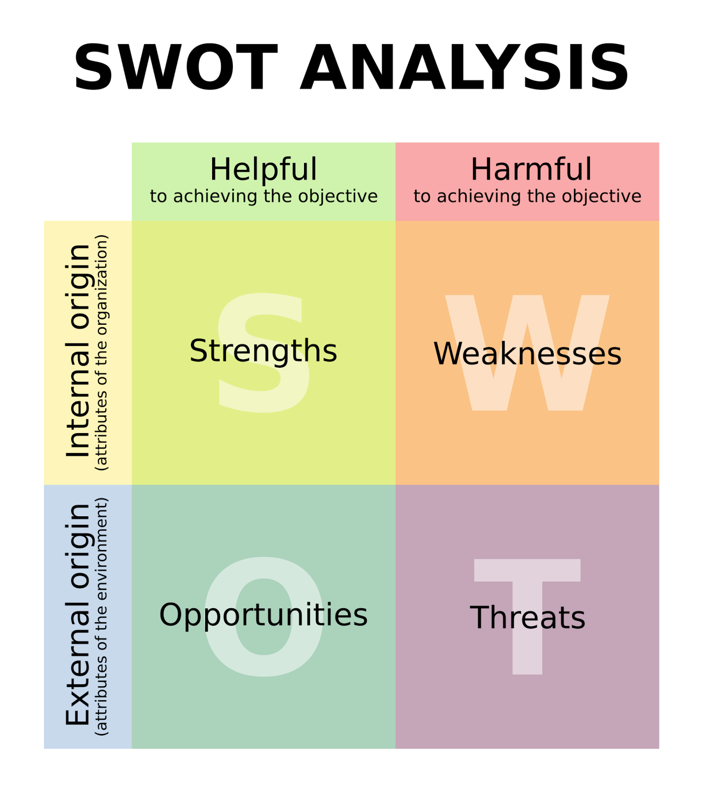
The four components of SWOT in a 2×2 matrix. Wikipedia.
{kind=link}
Strengths
Throughout the 2010s and due to global markets, the Open Source foundational text rendering libraries FreeType and particularly HarfBuzz gained huge (possibly majority) market share, thanks to Google’s Android and Chrome, but also a long list of smaller platforms and products. This, then, forces type designers to test their fonts against the Open Source platform, something that was not the case while the market share was limited to Linux Desktop and a few obscure platforms.
Another strength of the Open Source platforms is its agility. Since the font stack is shipped in small modules, they are each updated on their own (relatively fast) schedule. And many big clients have very short release cycles: Six weeks for Chrome and Firefox, once-a-year for Android, and almost instantly for the Linux distributions. This enables rapid development and experimentation with new features and ideas. As the Chrome hybrid text rendering architecture shows, this can give Open Source applications an edge over proprietary competitors on non-Open Source platforms.
The usual Open Source benefits apply.
Weaknesses
Even with the market share, the Open Source platform has no authority. While Microsoft and Apple can ship new font-format features and later shove them into the ISO OpenFontFormat and OpenType, which the Open Source platform follows, these vendors and specs do not follow updates to the Open Source platform in the same way. Whereas Microsoft and Apple have shipped new font-format features and then contributed them to the specs, protesting change proposals would disrupt their already shipping implementations, Google Chrome will not ship non-standardized features because of its intent-to-ship policy. This pushes shipping new features coming from the Open Source platform corner of the industry to the tail end of the standardization lifecycle instead of its head, which means a multi-year lag.
This is ironic, as Google funds new Open Source platform font-format developments, yet Google Chrome refuses to ship until competitors ship them first! Why am I paid to do this, again? Android is better, in that it is not bound by similar policies.
Opportunities
More applications, native or online, are moving to the Open Source platform than ever. Even IKEA has switched to the Noto fonts in 2019! And Apple ships Noto fonts to round out its platform type library and also offer complete Unicode coverage. This has brought immense testing and user feedback to the platform. There is a great opportunity to get even more organizations even more involved in developing the platform further.
A great example of this is: when the RustyBuzz port of HarfBuzz to Rust was declared deprecated by its developer, Yevhenii Reizner, a Typst developer, Laurenz Stampfl, stepped up to backport HarfBuzz shaping updates up to HarfBuzz version 9.0.0 to RustyBuzz, which at the time was stuck at HarfBuzz 2.x!
Threats
The biggest threat to the ecosystem is that Google reduces resources it currently pours into the ecosystem. Mozilla already cut most of its (much smaller) involvement, by way of abandoning Servo and Firefox OS. The Linux Desktop has been benefiting from Google’s investment into HarfBuzz, FreeType, and other projects.
While Chrome and Android will be with us for a while longer, Google Fonts invests the most into the ecosystem, in terms of commissioning fonts (led by Dave Crossland), as well as investing developer time in terms of contractors (including myself, Colin Rofls, Khaled Hosny, and Simon Cozens) and full-time engineers (Chad Brokaw, Cosimo Lupo, Garret Rieger, Roderick Sheeter, Qunxin Liu, and others). Google company-wide budget cuts reaching the Fonts team pose the biggest threat.
While the Rust migration is beneficial to the ecosystem in the long term, in the short term it has the potential to fragment the ecosystem and reduce resources (especially from Google) available to the C / C++ and the Python platforms, which we need to update for quite a few years more.
Other resources
Here is a collection of other resources:
My homepage includes links to over two dozen presentations and papers I have made over the years,
Digital Typography by Nicolas Rougier and I surveyed the rasterizer landscape in 2018. Includes much more detail, and a list of great further reading material and references on the subject.
The Raster Tragedy was updated, last in 2018, to include a growing number of chapters on hinting and subpixel text rendering,
The Bézier Primer by Pomax, is 101-reading for anyone interested in dealing with vector fonts in their current Bézier form.
Raph Levien’s blog and other writings cover the topic of graphics and text rendering on the GPU from Rust,
The typo.social Mastodon server is a social-network community for the type design community,
The FontTools and HarfBuzz GitHub discussion forums and issue trackers are a good place to get help with many topics related to font compilation and consumption,
You can always email me or tag me on X or typo.social. My contact information is on my homepage.
Acknowledgements
I would like to thank the following people for reviewing drafts of this article as well as insightful discussions: Bianca Berning, Dave Crossland, Eskil Abrahamsen Blomfeldt, fantasai, Garret Rieger, Just van Rossum, Khaled Hosny, Lars Knoll, Liam Quin, Roderick Sheeter, Skef Iterum, Werner Lemberg, and others I definitely have missed. All mistakes are mine.
I also like to thank the Google Fonts team for supporting the production of this document, and continued investment into the ecosystem.
About the author
Behdad Esfahbod is an Iranian-Canadian software developer and Open Source enthusiast based in Edmonton, Canada. He is the primary author and developer of HarfBuzz, and has over 25 years experience working on internationalization, fonts, and text rendering in the Open Source ecosystem. He has worked at Google, Facebook, Red Hat, and the FarsiWeb project.
When not hacking, behdad enjoys cooking, travel, photography, making short films, cars, camping, and playing with his niece.
With Dominik Röttsches driving, in my 1974 MG MGB (R.I.P.). Redwood City, California. 2017.
Version history
2025-02-12 Export Google Docs to self-hosting, using gdocs-me-up.
Rest of 2024 Improve based on received feedback.
2024-07-08 Initial public release.
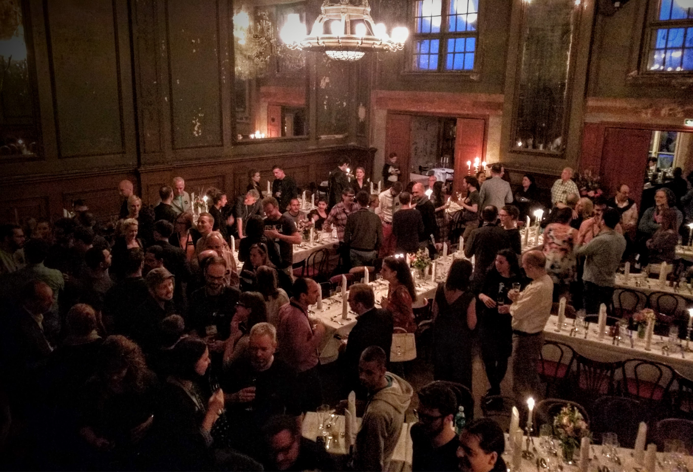
Type-design industry mingling. Berlin, Germany. 2016.